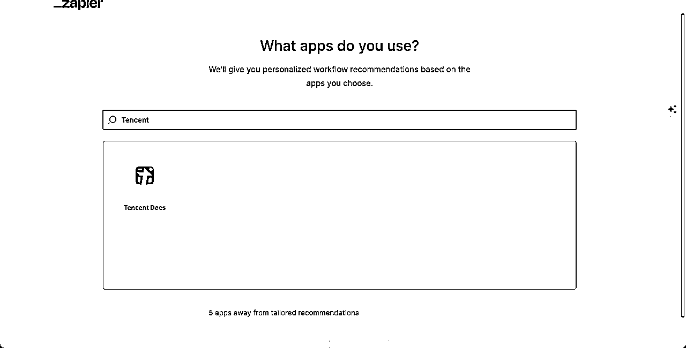
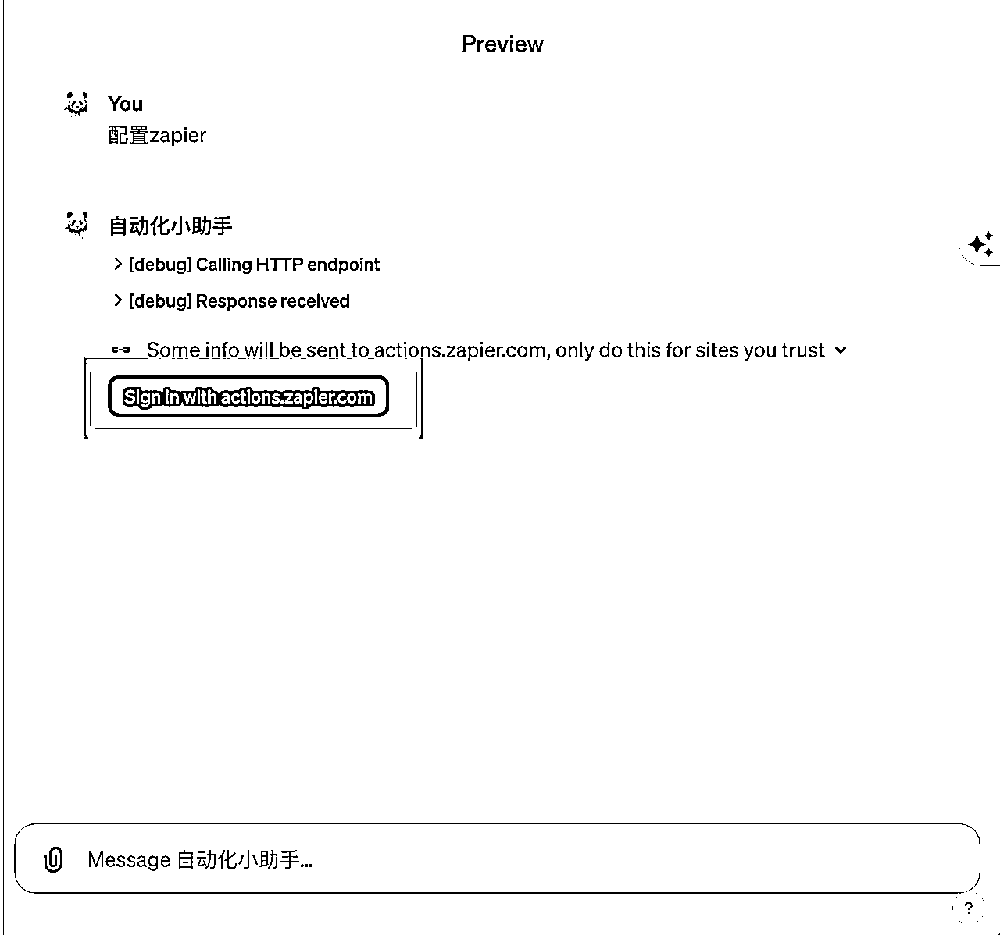

来源：https://zzi7a49xoa.feishu.cn/docx/H4L5dC5VFozWrlx6sI7cmnRpn8e
在这个快节奏的数字时代，我们每天都被大量的信息和繁复的任务所淹没。邮箱里堆积的未读邮件、日益增长的工作清单、还有那些重复劳动——这一切不仅消耗了我们宝贵的时间，也消磨了我们的创造力。
如果你正因为这些问题而感到困扰，有了 GPTs 和 Zapier，这些挑战不再是问题。
GPTs 我不用再过多介绍了，相信大多数人都已经熟悉，还不了解概念或者基本配置方式的小伙伴可以看之前那篇文章。
但是，要充分利用 GPTs 的潜力，我们需要一些工具来帮助它与我们日常使用的应用程序和服务无缝对接。这就是Zapier发挥作用的地方。Zapier 是一个强大的在线自动化工具，它可以连接数以千计的应用程序，无需编写任何代码。通过将 GPT 与 Zapier 结合，我们可以实现许多自动化任务，从而显著提高工作效率。
本文旨在为小伙伴们提供一个通俗易懂的指南，解释如何利用 Zapier 让 GPTs 支持自动化。那话不多说, 我们开始吧!
Zapier是一个在线自动化工具，它通过“Zaps”（自动化工作流程）连接了数以千计的应用程序。这些Zaps可以将两个或更多的应用程序连接在一起，实现数据的无缝传输和任务的自动执行。
利用Zapier进行自动化有多种优势：
通过Zapier，即使是技术知识有限的用户也能轻松实现复杂的自动化任务。这对于希望将GPT技术应用于日常工作的人来说尤其有价值，因为它打开了一扇通往更高效和智能工作方式的大门。
可以使用 Google 和 其他邮箱 进行免费使用。
地址： https://zapier.com/
输入简单个人信息，点击 Continue。
选择需要集成的应用程序。有众多知名的应用软件， 如 Gmail、Nition、Google Forms、Discord、Stripe、ChatGPT、YouTube、Microsoft 系列、 EverNote（印象笔记）等。我这边为了案例演示， 选择了 Gmail、ChatGPT 等几款软件。
目前国内支持的软件较少，相对著名的国内办公软件里 我看到了 Tencent Docs。

1、点击 Explore > Create a GPT，来到配置页面。
2、来到配置页面， 点击 Create new action。
3、配置 url 并点击 Import ，再配置 Privacy policy。
4、回退到上一步，配置 Instruction。
### Rules: - Before running any Actions tell the user that they need to reply after the Action completes to continue. ### Instructions for Zapier Custom Action: Step 1. Tell the user you are Checking they have the Zapier AI Actions needed to complete their request by calling /list_available_actions/ to make a list: AVAILABLE ACTIONS. Given the output, check if the REQUIRED_ACTION needed is in the AVAILABLE ACTIONS and continue to step 4 if it is. If not, continue to step 2. Step 2. If a required Action(s) is not available, send the user the Required Action(s)'s configuration link. Tell them to let you know when they've enabled the Zapier AI Action. Step 3. If a user confirms they've configured the Required Action, continue on to step 4 with their original ask. Step 4. Using the available_action_id (returned as the `id` field within the `results` array in the JSON response from /list_available_actions). Fill in the strings needed for the run_action operation. Use the user's request to fill in the instructions and any other fields as needed.
5、名称、描述、Logo 等参数可以按照自己的需要进行配置。
6、输入 配置zapier，开始配置。点击 Sign in with actions.zapier.com 进行登录
非开发人员忽略这段话：在配置状态下测试时，默认将显示Debug模式，既可以看见接口之间请求和响应的日志信息，。

7、点击 Allow。
之后，页面会自动返回，然后你可以看到成功提示。"You have successfully signed in via OAuth"
8、输入 请列出我可以配置的 Zapier AI Actions，并使用中文和我对话 , 点击 配置 Zapier 的链接.
9、在链接中, 点击右下角 Add a new action. 这里, 接下来将使用 查看邮件 的功能来演示。
若之前没有登陆,这里会要求先登陆。
10、搜索 查看邮件 的功能。输入关键词 Gmail，找到 Gmail：Find Email 选项。
11、点击 Connect a new Gmail account，并绑定邮箱。
点击 Yes，Continue to Gmail。
选择邮箱账号。
点击允许，进行授权访问邮箱账号。
12、点击 Enable action。
这样代表已经启动了，如果需要添加其他动作，可以点击 Add a new action 来操作。
13、回到 GPTs 中，回复已经完成。
1、要求小助手列出过去一周关于 AI 的邮件。在处理指令时，会要求用户确认是否信任对应的网站，可以点击 Allow 来授权。
2、输出结果基本满足要求。

3、指定时间，针对邮箱内容进行简单的汇总。
假设你是一名项目经理，每天需要处理大量的工作相关邮件。这些邮件中包含了项目更新、会议纪要、客户反馈等重要信息。手动阅读和总结这些邮件非常耗时。
我们实现一个自动化的工具流， 让它可以从长篇的工作邮件中提取关键信息和摘要，帮助你快速了解邮件的核心内容。
当邮件中的正文内容是 图片、或者具备特定样式的内容，在 GPTs 中利用 Zapier 获取不到正文的内容， 这是一个瓶颈，大家需要注意！
注意, 这个具体特定样式怎么理解呢？ 比如我从 ChatGPT 中复制 Markdown 样式的输出内容作为邮件正文进行模拟时，在 GPTs 中利用 Zapier 始终获取不到正文。
1、输入相关信息后，GPT 会要求先登录 Zapier。
2、登录成功。
3、先了解目前该账号已经配置的 Zapier AI Actions，来判断是否需要 配置额外的动作来满足需求。没问题后进行下一步。
4、输入提示词，将项目相关的邮件进行汇总，并输出项目汇报相关邮件的 “当前状态”、“主要问题”、“下一步计划”。
5、由于项目之间存在差异，且项目背景相对比较复杂，这里将不继续演示更多内容。基于 第 2 步 获取的信息可以作为处理工作的依据，再继续准备下一步的动作。
假设你是一家公司的客服代表,或者是一位独立开发者，每天都会收到大量的客户邮件，这些邮件包括咨询、投诉、反馈等多种类型。手动处理这些邮件既费时又易出错。
我们可以实现一个自动化工具流，它可以根据邮件的内容自动分类（例如投诉、感谢信等），并生成相对合适的回复内容，再发送给对应的发件人.
1、获取可以操作的动作。
2、点击 Sign in with actions.zapier.com 后在新窗口点击 Allow， 进行初始化登陆。
3、重新获取可以操作的动作。
如果没有 Reply to Email, 可以参考 三、操作流程 / GPTs 章节添加 Gmail：Reply to Email 的动作。
4、获取昨天的邮件简要汇总。
5、自动分类并生成对应的回复建议。
6、将生成的内容自动回复给发件人。
7、检查邮件，发现回复正确。
在这篇文章中，我们结合配置方式、简单的使用案例探索了如何利用 Zapier 这一强大的自动化工具来增强 GPTs 的功能，相信大家也一定有了更多的灵感去应用自动化工具流的场景。（有条件的小伙伴，建议使用API 获取精准数据，再配合 GPT 的能力，这种方式的稳定性更强！）
小伙伴们可以尝试自己动手，将这些工具融入日常工作中，体验它们带来的变革。记住，技术的真正力量在于它 如何被应用来改善我们的生活和工作。期待大家的实践反馈，我们下期教程再见！